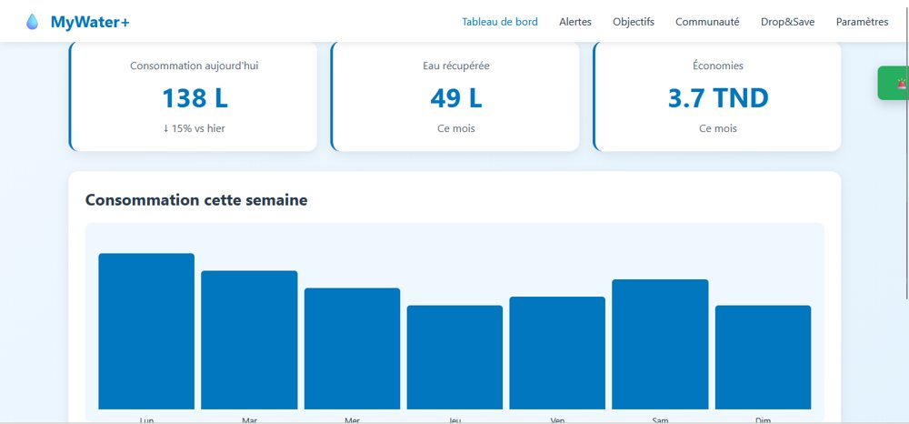
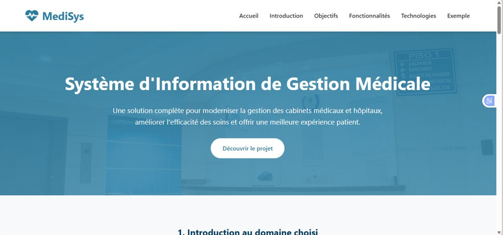
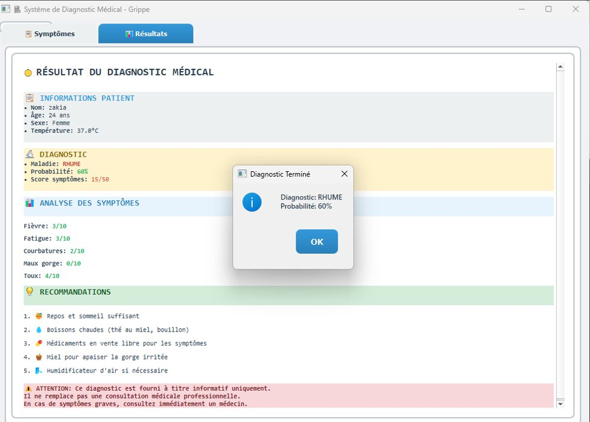
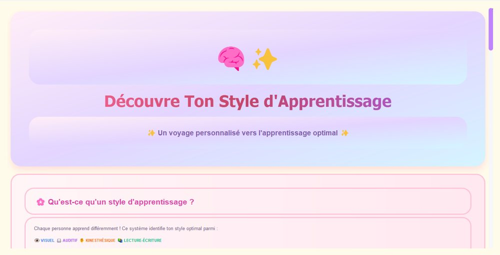
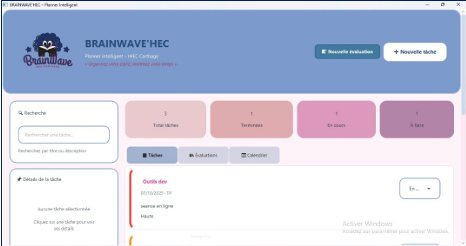
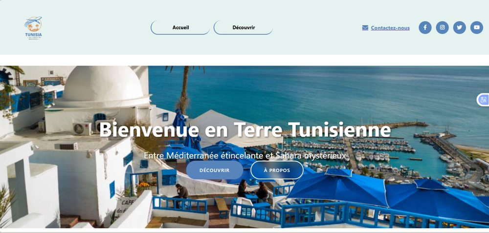
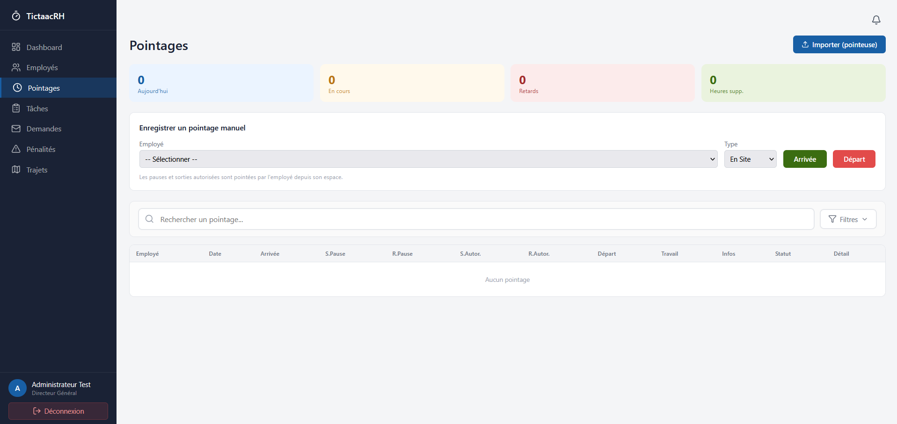

MyWater+
Système intelligent qui aide les foyers à suivre leur consommation d'eau, anticiper les coupures et réduire le gaspillage, en réponse à un besoin réel en Tunisie.
Étudiante en Business Intelligence, IHEC Carthage
Passionnée par l'analyse de données et le développement informatique, je cherche un stage de fin d'études pour contribuer à des projets concrets de BI et d'analyse de donneés et pour développer des solutions .
Je suis Zakia, 21 ans, étudiante en 3e année de Business Intelligence à l'IHEC Carthage. J'aime transformer des données en indicateurs clairs et construire des applications qui répondent à un besoin réel.
Mon parcours combine l'analyse de données (Power BI, SQL, Python, Machine Learning) et le développement d'applications web et desktop. Curieuse et motivée, j'apprends vite et je travaille volontiers en équipe.
Une base solide en data, complétée par du développement full-stack.
Qualités : créativité, adaptabilité, esprit d'équipe, apprentissage rapide.
Expérience, formation et certifications.
Développement d'une application web de gestion des ressources humaines : employés, pointages, tâches et demandes. Backend avec Node.js et Express, base MongoDB, interfaces en React et intégration frontend / backend.
Analyse et traitement de données, visualisation, classification, clustering.
Applications web avec Java, introduction aux API et au backend.
IHEC Carthage
IHEC Carthage
ISG Sousse
Lycée pilote de Kairouan
Une sélection de projets académiques et personnels, avec le code source ou une démo.

Système intelligent qui aide les foyers à suivre leur consommation d'eau, anticiper les coupures et réduire le gaspillage, en réponse à un besoin réel en Tunisie.

Système d'information pour cabinet ou hôpital qui automatise les rendez-vous, les dossiers patients, les prescriptions et les communications.

Application qui analyse les symptômes du patient et génère une maladie probable, un score détaillé et des recommandations, avec un rapport complet.

Exploration de la façon dont l'intelligence artificielle peut personnaliser l'apprentissage en identifiant le style optimal de chaque personne.

Application desktop permettant aux étudiants de gérer leurs tâches, leurs échéances et leurs priorités. Participation à la conception et au développement des fonctionnalités.

Site interactif présentant la richesse touristique du pays, avec une carte des gouvernorats, des pages par région et un design responsive.

Application web de gestion des employés et de suivi des pointages, intégrant l'authentification sécurisée, la gestion des présences, le contrôle des accès et un tableau de bord administrateur pour faciliter le suivi des activités et optimiser la gestion des ressources humaines..
Écrivez-moi, je réponds rapidement.